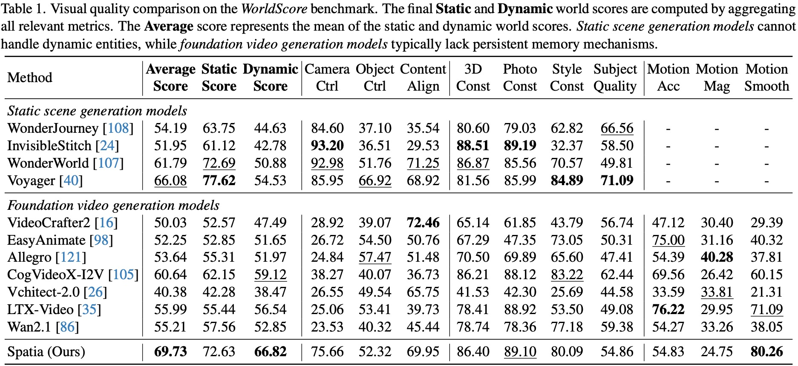

Spatia
Video Generation with Updatable Spatial Memory
Long-horizon, spatially consistent video generation enabled by persistent 3D
scene point clouds and dynamic-static disentanglement.
Interactive Playground
Experience Explicit Camera Control combined with Instruction-Driven Dynamics. Use the buttons below to drive diverse dynamic events via text instructions while following a precise camera trajectory.
* Click capsules to swap the generated video based on the instruction.
Abstract
Existing video generation models struggle to maintain long-term spatial and temporal consistency due to the dense, high-dimensional nature of video signals. To overcome this limitation, we propose Spatia, a spatial memory-aware video generation framework that explicitly preserves a 3D scene point cloud as persistent spatial memory. Spatia iteratively generates video clips conditioned on this spatial memory and continuously updates it through visual SLAM. This dynamic-static disentanglement design enhances spatial consistency throughout the generation process while preserving the model's ability to produce realistic dynamic entities. Furthermore, Spatia enables applications such as explicit camera control and 3D-aware interactive editing, providing a geometrically grounded framework for scalable, memory-driven video generation.

Figure 1. Spatia maintains a scene point cloud as its spatial memory and conditions on it throughout the iterative video generation process. It enables: (a) dynamic-static disentanglement; (b) spatially consistent generation; (c) explicit camera control; and (d) 3D-aware interactive editing.
Method Overview
The training pipeline of Spatia consists of two main stages: data pre-processing and multi-modal conditional generation. In the View-Specific Scene Point Cloud Estimation stage (Figure a), we estimate a 3D scene point cloud from candidate frames (removing dynamic entities) and render it from specified camera viewpoints. Simultaneously, in the Reference Frame Retrieval stage (Figure b), we select the most spatially relevant reference frames based on point cloud overlap. Finally, in the Architecture stage (Figure c), the model employs a multi-modal diffusion transformer to generate target video clips conditioned on text, spatial memory, and temporal context.

Dynamic-Static Disentanglement
Spatially Consistent Generation
Long-horizon Scene Exploration
3D-Aware Interactive Editing
Experiments & Results

We compare Spatia with two categories of models on the WorldScore benchmark: static scene generation models (e.g., WonderJourney, Voyager) and foundation video generation models (e.g., LTX-Video, Wan2.1). As shown in the table, Spatia achieves the highest Average Score (69.73) and Dynamic Score (66.82), significantly outperforming baselines. Specifically, Spatia successfully combines the strengths of both categories: it maintains high 3D Consistency and Photo Consistency comparable to static scene generators, while offering superior motion generation capabilities (Object Control, Motion Smoothness) that surpass general foundation models.